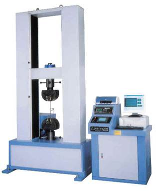
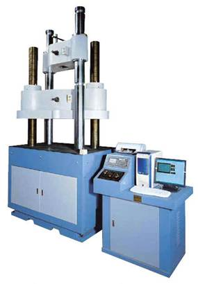
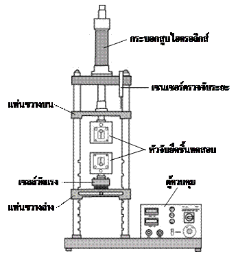
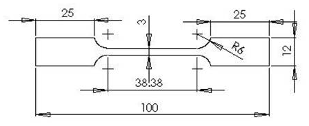
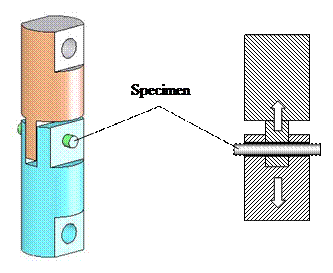
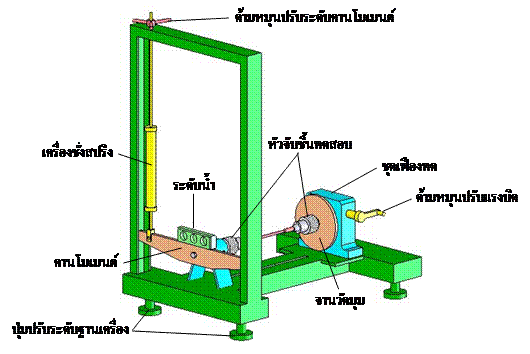
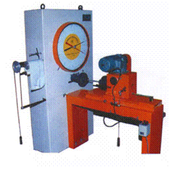
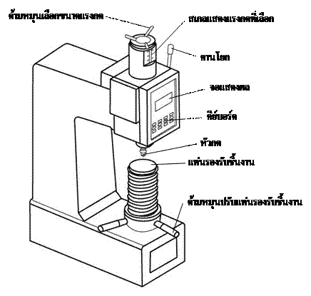

🎯 เรียนจบแล้วต้องทำได้
- ความรู้อธิบายงานทดสอบการรับแรงดึงได้
- ความรู้บอกงานทดสอบการรับแรงอัดได้
- ความรู้อธิบายหลักการทดสอบโดยการเฉือนได้
- ทักษะทดสอบวัสดุโดยการเฉือนตรงได้
- ทักษะทดสอบวัสดุโดยการเฉือนบิดได้
- เจตคตินำความรู้ไปปรับใช้ในชีวิตประจำวันได้
🧭 สาระสำคัญ
การเลือกวัสดุให้เหมาะกับงานวิศวกรรมต้องพิจารณาคุณสมบัติเชิงกล ซึ่งหมายถึงความสามารถของวัสดุในการต้านทานภาระที่มากระทำ เช่น แรงดึง แรงอัด และแรงเฉือน
เรื่องที่จะศึกษา: ① การทดสอบแรงดึง ② การทดสอบแรงอัด ③ การทดสอบแรงเฉือน (เฉือนตรง / เฉือนบิด) ④ การทดสอบความแข็ง
ความเค้นและความเครียด
เมื่อมีแรงมากระทำกับวัตถุ ภายในเนื้อวัสดุจะเกิดความเค้น (แรงต่อพื้นที่) และวัตถุจะเปลี่ยนขนาดหรือรูปร่าง ซึ่งวัดเป็นความเครียด (ขนาดที่เปลี่ยนไปเทียบกับขนาดเดิม)
ความเค้น 3 ชนิด (ดูภาพเคลื่อนไหว)
ความเค้นดึง (Tensile)
ความเค้นอัด (Compressive)
เฉือนเดี่ยว (Single Shear)
เฉือนคู่ (Double Shear)
ความเครียด (Strain)
อัตราส่วนระหว่างขนาดที่เปลี่ยนไปกับขนาดเดิม ไม่มีหน่วย มี 3 ชนิดเช่นเดียวกับความเค้น
ความเครียดดึง
วัตถุยาวเดิม l ถูกดึงจนยืดออกเป็นระยะ δ
ความเครียดอัด
วัตถุยาวเดิม l ถูกอัดจนหดสั้นลงเป็นระยะ δ
ความเครียดเฉือน
เมื่อมุม φ เล็กมาก tan φ ≈ φ (เรเดียน)
กราฟความเค้น–ความเครียด (เหล็กกล้าละมุน)
ลาก แถบเลื่อน เพื่อเพิ่มแรงดึงทีละน้อย แล้วดูว่าชิ้นทดสอบเปลี่ยนไปอย่างไร หรือแตะที่จุด a–e บนกราฟเพื่ออ่านความหมาย
ลากแถบเลื่อนด้านซ้ายเพื่อเริ่มดึงชิ้นทดสอบ
มอดุลัสของความยืดหยุ่น (Young's modulus)
คือความสามารถของวัสดุในการต้านทานการเปลี่ยนรูปเมื่อมีแรงกระทำ หาได้จากความชันของช่วงเส้นตรง 0–a บนกราฟ ความสัมพันธ์นี้ค้นพบโดยโรเบิร์ต ฮุก จึงเรียกว่า กฎของฮุก (Hooke's law)
การทดสอบแรงดึง (Tensile Testing)
ทดสอบความสามารถของวัสดุในการต้านทานแรงดึง โดยดึงชิ้นทดสอบแรงดึงในแนวเส้นตรงอย่างต่อเนื่อง จนชิ้นทดสอบขาดออกจากกัน แล้วบันทึกแรงดึงกับระยะยืด
เครื่องทดสอบอเนกประสงค์ (Universal Testing Machine)
ใช้ทดสอบได้ทั้งแรงดึง แรงอัด และแรงเฉือน แบ่งเป็น 2 ประเภทตามวิธีสร้างแรง



ชิ้นทดสอบแรงดึง (Tensile test specimen)
นิยมใช้ 2 แบบ คือ ภาคตัดวงกลม และ ภาคตัดสี่เหลี่ยมมุมฉาก

| So (mm²) | d (mm) | Lo (mm) | Lc ต่ำสุด | r ต่ำสุด | ± d |
|---|---|---|---|---|---|
| 12.5 | 3.99 | 20 | 22 | 4 | 0.02 |
| 25 | 5.64 | 28 | 31 | 5 | 0.03 |
| 50 | 7.98 | 40 | 44 | 8 | 0.04 |
| 100 | 11.28 | 56 | 62 | 10 | 0.06 |
| 150 | 13.82 | 69 | 76 | 13 | 0.07 |
| 200 | 15.96 | 80 | 88 | 15 | 0.08 |
| 400 | 22.56 | 113 | 124 | 23.5 | 0.13 |
| b (mm) | Lo (mm) | r ต่ำสุด (mm) | Lt ประมาณ (mm) |
|---|---|---|---|
| 3 | 12 | 6 | 50 |
| 6 | 24 | 12 | 100 |
| 12.5 | 50 | 25 | 200 |
| 25 | 100 | 25 | 300 |
สมการคำนวณผลการทดสอบแรงดึง
σu = FuSo
δt = Lu − LoLo × 100
E = σε, σ = FA, ε = δl
📝 ตัวอย่าง 2.1
ทดสอบแรงดึงชิ้นทดสอบเส้นผ่าศูนย์กลาง d = 5.64 mm ความยาวพิกัดเดิม Lo = 28 mm ได้แรงดึงสูงสุด 14.5 kN และความยาวพิกัดสุดท้าย 30.4 mm จุดสุดท้ายที่กราฟเป็นเส้นตรงมีแรงดึง 11.4 kN และระยะยืด 0.46 mm จงหา (1) σu (2) เปอร์เซ็นต์ความยืด (3) E
ดูวิธีทำ
🧮 เครื่องคิดเลข: ทดสอบแรงดึง
การทดสอบการอัด (Compression Test)
ใช้แรงอัดวัสดุจนวัสดุเปลี่ยนแปลง: วัสดุเปราะ อัดจนแตก · วัสดุเหนียว อัดจนเปลี่ยนรูปถาวร (ยุบเหลือ ⅓ ของความสูงเดิม)
σc = FBSo
εc = hcho × 100 = ho − hLho × 100
📈 กราฟการอัดต่างจากกราฟการดึงอย่างไร
กราฟการอัดไม่โค้งลงเหมือนกราฟการดึง เพราะเมื่อเกินพิกัดความยืดหยุ่น วัสดุจะ ขยายออกด้านข้าง พื้นที่หน้าตัดจึงเพิ่มขึ้นและรับแรงได้มากขึ้น โลหะส่วนมากจึงมีความแข็งแรงอัดสูงสุดมากกว่าความแข็งแรงดึงสูงสุด
⚠️ ข้อจำกัด (ทำให้นิยมน้อยกว่าการทดสอบแรงดึง)
- ทำให้แรงอัดอยู่ตามแนวแกนจริง ๆ ได้ยาก
- ชิ้นทดสอบโก่งงอ (buckling) ได้ง่าย
- ความเสียดทานที่ปลายชิ้นงานทำให้ความเค้นซับซ้อน คำนวณยาก
- สัดส่วนความสูงต่อพื้นที่หน้าตัดต้องได้มาตรฐาน
| ชนิด | สัดส่วน h กับ d | d (mm) | h (mm) | เหมาะกับ |
|---|---|---|---|---|
| ขนาดสั้น (Short) | h = 0.9d | 30 | 27 | ทดสอบโลหะแบริ่ง |
| ขนาดกลาง (Medium) | h = 3d | 13–30 | 39–90 | ทดสอบทั่วไป |
| ขนาดยาว (Long) | h = 8d ถึง 10d | 20–32 | 160–320 | หาค่ามอดุลัสความยืดหยุ่น |
📝 ตัวอย่าง 2.2
ทดสอบการอัดชิ้นทดสอบเส้นผ่าศูนย์กลาง 15 mm ความยาวเดิม 30 mm ความยาวสุดท้าย 23 mm แรงอัดสูงสุดก่อนแตก 35 kN จงหา (1) ความแข็งแรงอัดสูงสุด (2) เปอร์เซ็นต์การยุบตัว
ดูวิธีทำ
🧮 เครื่องคิดเลข: ทดสอบการอัด
การทดสอบโดยการเฉือน (Shear Test)
ให้แรงเฉือนแก่ชิ้นทดสอบจนชิ้นทดสอบขาด แบ่งเป็น 2 ลักษณะ คือ การเฉือนตรง และ การเฉือนบิด
แรงเฉือนตรงคือแรงที่ขนานกันและมีทิศตรงข้าม กระทำผ่านเซนทรอยด์ของพื้นที่ แบ่งเป็นเฉือนเดี่ยวและเฉือนคู่
τ = FA
τ = F2A
- อุปกรณ์แบบ Johnson: ใช้กับชิ้นทดสอบภาคตัดสี่เหลี่ยมหรือวงกลม ทดสอบได้ทั้งเฉือนเดี่ยวและเฉือนคู่
- อุปกรณ์ที่ใช้กับเครื่องทดสอบอเนกประสงค์: เป็นการทดสอบเฉือนคู่ มีรูทะลุสำหรับสอดชิ้นทดสอบภาคตัดกลม

📝 ตัวอย่าง 2.3
ทดสอบเฉือนตรงแบบเฉือนคู่ ชิ้นทดสอบเส้นผ่าศูนย์กลาง 5.5 mm แรงเฉือนสูงสุด 18 kN จงหาความแข็งแรงเฉือนสูงสุด
ดูวิธีทำ
🧮 เครื่องคิดเลข: เฉือนตรง
นิยมใช้หาความต้านทานการเฉือนบิดของเพลา (ซึ่งมักเป็นโลหะเหนียวที่ผ่านการอบชุบ) ไม่นิยมใช้กับวัสดุเปราะ เช่น เหล็กหล่อ คอนกรีต เพราะจะแตกก่อนถึงความต้านทานเฉือนสูงสุด แรงเฉือนบิดเกิดจากโมเมนต์บิด (torque) ที่พยายามบิดวัสดุให้ขาด
T = F · R
τ = T · rJ
เพลาตัน: J = π d⁴32
เพลากลวง: J = π (D⁴ − d⁴)32


📝 ตัวอย่าง 2.4
ชุดทดลองเฉือนบิดมีรัศมีคานโมเมนต์ 0.15 m ชิ้นทดสอบ d = 6 mm ยาว 30 mm แรงสูงสุดจากเครื่องชั่งสปริงก่อนขาด 5.3 kg จงหา (1) โมเมนต์บิดสูงสุด (2) ความเค้นเฉือนบิดสูงสุด
ดูวิธีทำ
🧮 เครื่องคิดเลข: เฉือนบิด
การทดสอบความแข็ง (Hardness)
ความแข็ง คือความต้านทานของวัสดุต่อแรงทางกลที่ทำให้เปลี่ยนรูปทรงหรือขนาดอย่างถาวร วิธีที่นิยมในงานโลหะวิทยาคือใช้หัวกดกดลงบนผิวแล้ววัดรอยกด มี 3 แบบ
บริเนลล์ (Brinell) · HB
- หัวกดลูกบอลทรงกลม
- วัดเส้นผ่าศูนย์กลางรอยบุ๋มด้วยกล้องไมโครสโคปสเกล
- มาตรฐาน: ลูกบอล 10 mm แรงกด 29,420 N กดแช่ 10–15 s
รอคเวลล์ (Rockwell) · HR
- วัดความลึกที่หัวกดจมลงไปในเนื้อชิ้นงาน
- มีหลายสเกล เช่น HRA, HRB, HRC
- HRB: ลูกบอล 1/16 นิ้ว · HRC: เพชรรูปกรวย 120°
วิคเกอร์ส (Vickers) · HV
- หัวกดเพชรทรงพีระมิดฐานจัตุรัส มุม 136°
- วัดเส้นทแยงมุมรอยกด 2 เส้นแล้วหาค่าเฉลี่ย
- หลักการคล้ายบริเนลล์ ต่างกันที่รูปทรงหัวกด
🔍 ถอดรหัสสัญลักษณ์ความแข็ง
พิมพ์ค่าความแข็ง เช่น 170 HB 5/250/30, 610 HV 294.2/20, 21 HRC

🧮 คำนวณความแข็งจากขนาดรอยกด (เสริม)
ใช้เมื่อวัดรอยกดด้วยกล้องไมโครสโคปสเกล แทนการเปิดตาราง
ใบงานการทดลอง
อ่านขั้นตอนล่วงหน้าก่อนเข้าห้องปฏิบัติการ แตะที่ชื่อใบงานเพื่อเปิดดูรายละเอียด
แบบทดสอบตรวจคำตอบทันที
เลือกชุดแบบทดสอบ แล้วกดตอบ ระบบจะบอกทันทีว่าถูกหรือผิด พร้อมเหตุผล ทำซ้ำได้ไม่จำกัด
สรุปสูตรทั้งหมด
กด Ctrl + P เพื่อพิมพ์หน้านี้ไว้ทบทวน